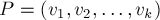
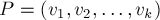
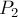
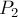
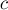
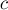
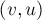

MAXimal
добавлено: 2 Mar 2009 17:45
редактировано: 6 Dec 2012 11:58
Содержание [скрыть]
Алгоритм Эдмондса нахождения наибольшего паросочетания в произвольных графах
Дан неориентированный невзвешенный граф  с
с  вершинами. Требуется найти в нём наибольшее паросочетание, т.е. такое наибольшее (по мощности) множество
вершинами. Требуется найти в нём наибольшее паросочетание, т.е. такое наибольшее (по мощности) множество  его рёбер, что никакие два ребра из выбранных не инцидентны друг другу (т.е. не имеют общих вершин).
его рёбер, что никакие два ребра из выбранных не инцидентны друг другу (т.е. не имеют общих вершин).
В отличие от случая двудольного графа (см. Алгоритм Куна), в графе могут присутствовать циклы нечётной длины, что значительно усложняет поиск увеличивающих путей.
Приведём сначала теорему Бержа, из которой следует, что, как и в случае двудольных графов, наибольшее паросочетание можно находить при помощи увеличивающих путей.
Увеличивающие пути. Теорема Бержа
Пусть зафиксировано некоторое паросочетание  . Тогда простая цепь  называется чередующейся цепью, если в ней рёбра по очереди принадлежат - не принадлежат паросочетанию . Чередующаяся цепь называется увеличивающей, если её первая и последняя вершины не принадлежат паросочетанию. Иными словами, простая цепь
. Тогда простая цепь  называется чередующейся цепью, если в ней рёбра по очереди принадлежат - не принадлежат паросочетанию . Чередующаяся цепь называется увеличивающей, если её первая и последняя вершины не принадлежат паросочетанию. Иными словами, простая цепь  является увеличивающей тогда и только тогда, когда вершина , ребро , ребро , ..., ребро , и вершина .
является увеличивающей тогда и только тогда, когда вершина , ребро , ребро , ..., ребро , и вершина .
Теорема Бержа (Claude Berge, 1957 г.). Паросочетание является наибольшим тогда и только тогда, когда для него не существует увеличивающей цепи.
Доказательство необходимости. Пусть для паросочетания существует увеличивающая цепь . Покажем, как перейти к паросочетанию большей мощности. Выполним чередование паросочетания вдоль этой цепи , т.е. включим в паросочетание рёбра , , ..., , и удалим из паросочетания рёбра , , ..., . В результате, очевидно, будет получено корректное паросочетание, мощность которого будет на единицу выше, чем у паросочетания (т.к. мы добавили рёбер, а удалили ребро).
Доказательство достаточности. Пусть для паросочетания не существует увеличивающей цепи, докажем, что оно является наибольшим. Пусть — наибольшее паросочетание. Рассмотрим симметрическую разность (т.е. множество рёбер, принадлежащих либо , либо , но не обоим одновременно). Покажем, что содержит одинаковое число рёбер из и (т.к. мы исключили из только общие для них рёбра, то отсюда будет следовать и ). Заметим, что состоит только из простых цепей и циклов (т.к. иначе одной вершине были бы инцидентны сразу два ребра какого-либо паросочетания, что невозможно). Далее, циклы не могут иметь нечётную длину (по той же самой причине). Цепь в также не может иметь нечётную длину (иначе бы она являлась увеличивающей цепью для , что противоречит условию, или для , что противоречит его максимальности). Наконец, в чётных циклах и цепях чётной длины в рёбра поочерёдно входят в и , что и означает, что в входит одинаковое количество рёбер от и . Как уже упоминалось выше, отсюда следует, что , т.е. является наибольшим паросочетанием.
Теорема Бержа даёт основу для алгоритма Эдмондса — поиск увеличивающих цепей и чередование вдоль них, пока увеличивающие цепи находятся.
Алгоритм Эдмондса. Сжатие цветков
Основная проблема заключается в том, как находить увеличивающий путь. Если в графе имеются циклы нечётной длины, то просто запускать обход в глубину/ширину нельзя.
Можно привести простой контрпример, когда при запуске из одной из вершин алгоритм, не обрабатывающий особо циклы нечётной длины (фактически, Алгоритм Куна) не найдёт увеличивающий путь, хотя должен. Это цикл длины 3 с висящим на нём ребром, т.е. граф 1-2, 2-3, 3-1, 2-4, и ребро 2-3 взято в паросочетание. Тогда при запуске из вершины 1, если обход пойдёт сначала в вершину 2, то он "упрётся" в вершину 3, вместо того чтобы найти увеличивающую цепь 1-3-2-4. Правда, на этом примере при запуске из вершины 4 алгоритм Куна всё же найдёт эту увеличивающую цепь.

Тем не менее, можно построить граф, на котором при определённом порядке в списках смежности алгоритм Куна зайдёт в тупик. В качестве примера можно привести такой граф с 6 вершинами и 7 рёбрами: 1-2, 1-6, 2-6, 2-4, 4-3, 1-5, 4-5. Если применить здесь алгоритм Куна, то он найдёт паросочетание 1-6, 2-4, после чего он должен будет обнаружить увеличивающую цепь 5-1-6-2-4-3, однако может так и не обнаружить её (если из вершины 5 он пойдёт сначала в 4, и только потом в 1, а при запуске из вершины 3 он из вершины 2 пойдёт сначала в 1, и только затем в 6).
Как мы увидели на этом примере, вся проблема в том, что при попадании в цикл нечётной длины обход может пойти по циклу в неправильном направлении. На самом деле, нас интересуют только "насыщенные" циклы, т.е. в которых имеется  насыщенных рёбер, где длина цикла равна . В таком цикле есть ровно одна вершина, не насыщенная рёбрами этого цикла, назовём её базой (base). К базовой вершине подходит чередующийся путь чётной (возможно, нулевой) длины, начинающийся в свободной (т.е. не принадлежащей паросочетанию) вершине, и этот путь называется стеблем (stem). Наконец, подграф, образованный "насыщенным" нечётным циклом, называется цветком (blossom).
насыщенных рёбер, где длина цикла равна . В таком цикле есть ровно одна вершина, не насыщенная рёбрами этого цикла, назовём её базой (base). К базовой вершине подходит чередующийся путь чётной (возможно, нулевой) длины, начинающийся в свободной (т.е. не принадлежащей паросочетанию) вершине, и этот путь называется стеблем (stem). Наконец, подграф, образованный "насыщенным" нечётным циклом, называется цветком (blossom).
Идея алгоритма Эдмондса (Jack Edmonds, 1965 г.) - в сжатии цветков (blossom shrinking). Сжатие цветка — это сжатие всего нечётного цикла в одну псевдо-вершину (соответственно, все рёбра, инцидентные вершинам этого цикла, становятся инцидентными псевдо-вершине). Алгоритм Эдмондса ищет в графе все цветки, сжимает их, после чего в графе не остаётся "плохих" циклов нечётной длины, и на таком графе (называемом "поверхностным" (surface) графом) уже можно искать увеличивающую цепь простым обходом в глубину/ширину. После нахождения увеличивающей цепи в поверхностном графе необходимо "развернуть" цветки, восстановив тем самым увеличивающую цепь в исходном графе.
Однако неочевидно, что после сжатия цветка не нарушится структура графа, а именно, что если в графе существовала увеличивающая цепь, то она существует и в графе , полученном после сжатия цветка, и наоборот.
Теорема Эдмондса. В графе существует увеличивающая цепь тогда и только тогда, когда существует увеличивающая цепь в .
Доказательство. Итак, пусть граф был получен из графа сжатием одного цветка (обозначим через  цикл цветка, и через соответствующую сжатую вершину), докажем утверждение теоремы. Вначале заметим, что достаточно рассматривать случай, когда база цветка является свободной вершиной (не принадлежащей паросочетанию). Действительно, в противном случае в базе цветка оканчивается чередующийся путь чётной длины, начинающийся в свободной вершине. Прочередовав паросочетание вдоль этого пути, мощность паросочетания не изменится, а база цветка станет свободной вершиной. Итак, при доказательстве можно считать, что база цветка является свободной вершиной.
цикл цветка, и через соответствующую сжатую вершину), докажем утверждение теоремы. Вначале заметим, что достаточно рассматривать случай, когда база цветка является свободной вершиной (не принадлежащей паросочетанию). Действительно, в противном случае в базе цветка оканчивается чередующийся путь чётной длины, начинающийся в свободной вершине. Прочередовав паросочетание вдоль этого пути, мощность паросочетания не изменится, а база цветка станет свободной вершиной. Итак, при доказательстве можно считать, что база цветка является свободной вершиной.
Доказательство необходимости. Пусть путь является увеличивающим в графе . Если он не проходит через , то тогда, очевидно, он будет увеличивающим и в графе . Пусть проходит через . Тогда можно не теряя общности считать, что путь представляет собой некоторый путь  , не проходящий по вершинам , плюс некоторый путь , проходящий по вершинам и, возможно, другим вершинам. Но тогда путь
, не проходящий по вершинам , плюс некоторый путь , проходящий по вершинам и, возможно, другим вершинам. Но тогда путь  будет являться увеличивающим путём в графе , что и требовалось доказать.
будет являться увеличивающим путём в графе , что и требовалось доказать.
Доказательство достаточности. Пусть путь является увеличивающим путём в графе . Снова, если путь не проходит через , то путь без изменений является увеличивающим путём в , поэтому этот случай мы рассматривать не будем.
Рассмотрим отдельно случай, когда начинается со сжатого цветка , т.е. имеет вид . Тогда в цветке найдётся соответствующая вершина  , которая связана (ненасыщенным) ребром с . Осталось только заметить, что из базы цветка всегда найдётся чередующийся путь чётной длины до вершины . Учитывая всё вышесказанное, получаем, что путь является увеличивающим путём в графе .
, которая связана (ненасыщенным) ребром с . Осталось только заметить, что из базы цветка всегда найдётся чередующийся путь чётной длины до вершины . Учитывая всё вышесказанное, получаем, что путь является увеличивающим путём в графе .
Пусть теперь путь проходит через псевдо-вершину , но не начинается и не заканчивается в ней. Тогда в есть два ребра, проходящих через , пусть это и . Одно из них обязательно должно принадлежать паросочетанию , однако, т.к. база цветка не насыщена, а все остальные вершины цикла цветка насыщены рёбрами цикла, то мы приходим к противоречию. Таким образом, этот случай просто невозможен.
Итак, мы рассмотрели все случаи и в каждом из них показали справедливость теоремы Эдмондса.
Общая схема алгоритма Эдмондса принимает следующий вид:
void edmonds() { for (int i=0; i<n; ++i) if (вершина i не в паросочетании) { int last_v = find_augment_path (i); if (last_v != -1) выполнить чередование вдоль пути из i в last_v; } } int find_augment_path (int root) { обход в ширину: int v = текущая_вершина; перебрать все рёбра из v если обнаружили цикл нечётной длины, сжать его если пришли в свободную вершину, return если пришли в несвободную вершину, то добавить в очередь смежную ей в паросочетании return -1; }
Эффективная реализация
Сразу оценим асимптотику. Всего имеется итераций, на каждой из которых выполняется обход в ширину за  , кроме того, могут происходить операции сжатия цветков — их может быть
, кроме того, могут происходить операции сжатия цветков — их может быть  . Таким образом, если мы научимся сжимать цветок за , то общая асимптотика алгоритма составит .
. Таким образом, если мы научимся сжимать цветок за , то общая асимптотика алгоритма составит .
Основную сложность представляют операции сжатия цветков. Если выполнять их, непосредственно объединяя списки смежности в один и удаляя из графа лишние вершины, то асимптотика сжатия одного цветка будет , кроме того, возникнут сложности при "разворачивании" цветков.
Вместо этого будем для каждой вершины графа поддерживать указатель на базу цветка, которому она принадлежит (или на себя, если вершина не принадлежит никакому цветку). Нам надо решить две задачи: сжатие цветка за при его обнаружении, а также удобное сохранение всей информации для последующего чередования вдоль увеличивающего пути.
Итак, одна итерация алгоритма Эдмондса представляет собой обход в ширину, выполняемый из заданной свободной вершины  . Постепенно будет строиться дерево обхода в ширину, причём путь в нём до любой вершины будет являться чередующимся путём, начинающимся со свободной вершины . Для удобства программирования будем класть в очередь только те вершины, расстояние до которых в дереве путей чётно (будем называть такие вершины чётными — т.е. это корень дерева, и вторые концы рёбер в паросочетании). Само дерево будем хранить в виде массива предков , в котором для каждой нечётной вершины (т.е. до которой расстояние в дереве путей нечётно, т.е. это первые концы рёбер в паросочетании) будем хранить предка - чётную вершину. Таким образом, для восстановления пути из дерева нам надо поочерёдно пользоваться массивами и , где — для каждой вершины содержит смежную ей в паросочетании, или
. Постепенно будет строиться дерево обхода в ширину, причём путь в нём до любой вершины будет являться чередующимся путём, начинающимся со свободной вершины . Для удобства программирования будем класть в очередь только те вершины, расстояние до которых в дереве путей чётно (будем называть такие вершины чётными — т.е. это корень дерева, и вторые концы рёбер в паросочетании). Само дерево будем хранить в виде массива предков , в котором для каждой нечётной вершины (т.е. до которой расстояние в дереве путей нечётно, т.е. это первые концы рёбер в паросочетании) будем хранить предка - чётную вершину. Таким образом, для восстановления пути из дерева нам надо поочерёдно пользоваться массивами и , где — для каждой вершины содержит смежную ей в паросочетании, или  , если таковой нет.
, если таковой нет.
Теперь становится понятно, как обнаруживать циклы нечётной длины. Если мы из текущей вершины в процессе обхода в ширину приходим в такую вершину  , являющуюся корнем или принадлежащую паросочетанию и дереву путей (т.е. от которой не равно -1), то мы обнаружили цветок. Действительно, при выполнении этих условий и вершина , и вершина являются чётными вершинами. Расстояние от них до их наименьшего общего предка имеет одну чётность, поэтому найденный нами цикл имеет нечётную длину.
, являющуюся корнем или принадлежащую паросочетанию и дереву путей (т.е. от которой не равно -1), то мы обнаружили цветок. Действительно, при выполнении этих условий и вершина , и вершина являются чётными вершинами. Расстояние от них до их наименьшего общего предка имеет одну чётность, поэтому найденный нами цикл имеет нечётную длину.
Научимся сжимать цикл. Итак, мы обнаружили нечётный цикл при рассмотрении ребра , где и — чётные вершины. Найдём их наименьшего общего предка  , он и будет базой цветка. Нетрудно заметить, что база тоже является чётной вершиной (поскольку у нечётных вершин в дереве путей есть только один сын). Однако надо заметить, что — это, возможно, псевдовершина, поэтому мы фактически найдём базу цветка, являющегося наименьшим общим предком вершин и . Реализуем сразу нахождение наименьшего общего предка (нас вполне устраивает асимптотика ):
, он и будет базой цветка. Нетрудно заметить, что база тоже является чётной вершиной (поскольку у нечётных вершин в дереве путей есть только один сын). Однако надо заметить, что — это, возможно, псевдовершина, поэтому мы фактически найдём базу цветка, являющегося наименьшим общим предком вершин и . Реализуем сразу нахождение наименьшего общего предка (нас вполне устраивает асимптотика ):
int lca (int a, int b) { bool used[MAXN] = { 0 }; // поднимаемся от вершины a до корня, помечая все чётные вершины for (;;) { a = base[a]; used[a] = true; if (match[a] == -1) break; // дошли до корня a = p[match[a]]; } // поднимаемся от вершины b, пока не найдём помеченную вершину for (;;) { b = base[b]; if (used[b]) return b; b = p[match[b]]; } }
Теперь нам надо выявить сам цикл — пройтись от вершин и до базы цветка. Будет более удобно, если мы пока просто пометим в каком-то специальном массиве (назовём его ) вершины, принадлежащие текущему цветку. После этого нам надо будет симитировать обход в ширину из псевдо-вершины — для этого достаточно положить в очередь обхода в ширину все вершины, лежащие на цикле цветка. Тем самым мы избежим явного объединения списков смежности.
Однако остаётся ещё одна проблема: корректное восстановление путей по окончании обхода в ширину. Для него мы сохраняли массив предков . Но после сжатия цветков возникает единственная проблема: обход в ширину продолжился сразу из всех вершин цикла, в том числе и нечётных, а массив предков у нас предназначался для восстановления путей по чётным вершинам. Более того, когда в сжатом графе найдётся увеличивающая цепь, проходящая через цветок, она вообще будет проходить по этому циклу в таком направлении, что в дереве путей это будет представляться движением вниз. Однако все эти проблемы изящно решаются таким манёвром: при сжатии цикла, проставим предков для всех его чётных вершин (кроме базы), чтобы эти "предки" указывали на соседнюю вершину в цикле. Для вершин и , если они также не базы, направим указатели предков друг на друга. В результате, если при восстановлении увеличивающего пути мы придём в цикл цветка в нечётную вершину, путь по предкам будет восстановлен корректно, и приведёт в базу цветка (из которой он уже дальше будет восстанавливаться нормально).
Итак, мы готовы реализовать сжатие цветка:
int v, u; // ребро (v,u), при рассмотрении которого был обнаружен цветок int b = lca (v, u); memset (blossom, 0, sizeof blossom); mark_path (v, b, u); mark_path (u, b, v);
где функция проходит по пути от вершины до базы цветка, проставляет в специальном массиве для них  и проставляет предков для чётных вершин. Параметр — сын для самой вершины (с помощью этого параметра мы замкнём цикл в предках).
и проставляет предков для чётных вершин. Параметр — сын для самой вершины (с помощью этого параметра мы замкнём цикл в предках).
void mark_path (int v, int b, int children) { while (base[v] != b) { blossom[base[v]] = blossom[base[match[v]]] = true; p[v] = children; children = match[v]; v = p[match[v]]; } }
Наконец, реализуем основную функцию — , которая будет искать увеличивающий путь из свободной вершины и возвращать последнюю вершину этого пути, либо , если увеличивающий путь не найден.
Вначале произведём инициализацию:
int find_path (int root) { memset (used, 0, sizeof used); memset (p, -1, sizeof p); for (int i=0; i<n; ++i) base[i] = i;
Далее идёт обход в ширину. Рассматривая очередное ребро  , у нас есть несколько вариантов:
, у нас есть несколько вариантов:
- Ребро несуществующее. Под этим мы подразумеваем, что и
 принадлежат одной сжатой псевдо-вершине (), поэтому в текущем поверхностном графе этого ребра нет. Кроме этого случая, есть ещё один случай: когда ребро уже принадлежит текущему паросочетанию; т.к. мы считаем, что вершина является чётной вершиной, то проход по этому ребру означает в дереве путей подъём к предку вершины , что недопустимо.
принадлежат одной сжатой псевдо-вершине (), поэтому в текущем поверхностном графе этого ребра нет. Кроме этого случая, есть ещё один случай: когда ребро уже принадлежит текущему паросочетанию; т.к. мы считаем, что вершина является чётной вершиной, то проход по этому ребру означает в дереве путей подъём к предку вершины , что недопустимо.if (base[v] == base[to] || match[v] == to) continue;
- Ребро замыкает цикл нечётной длины, т.е. обнаруживается цветок. Как уже упоминалось выше, цикл нечётной длины обнаруживается при выполнении условия:
if (to == root || match[to] != -1 && p[match[to]] != -1)
В этом случае нужно выполнить сжатие цветка. Выше уже подробно разбирался этот процесс, здесь приведём его реализацию:
int curbase = lca (v, to); memset (blossom, 0, sizeof blossom); mark_path (v, curbase, to); mark_path (to, curbase, v); for (int i=0; i<n; ++i) if (blossom[base[i]]) { base[i] = curbase; if (!used[i]) { used[i] = true; q[qt++] = i; } }
- Иначе — это "обычное" ребро, поступаем как и в обычном поиске в ширину. Единственная тонкость — при проверке, что эту вершину мы ещё не посещали, надо смотреть не в массив
 , а в массив
, а в массив  — именно он заполняется для посещённых нечётных вершин. Если мы в вершину ещё не заходили, и она оказалась ненасыщенной, то мы нашли увеличивающую цепь, заканчивающуюся на вершине , возвращаем её.
— именно он заполняется для посещённых нечётных вершин. Если мы в вершину ещё не заходили, и она оказалась ненасыщенной, то мы нашли увеличивающую цепь, заканчивающуюся на вершине , возвращаем её.if (p[to] == -1) { p[to] = v; if (match[to] == -1) return to; to = match[to]; used[to] = true; q[qt++] = to; }
Итак, полная реализация функции :
int find_path (int root) { memset (used, 0, sizeof used); memset (p, -1, sizeof p); for (int i=0; i<n; ++i) base[i] = i; used[root] = true; int qh=0, qt=0; q[qt++] = root; while (qh < qt) { int v = q[qh++]; for (size_t i=0; i<g[v].size(); ++i) { int to = g[v][i]; if (base[v] == base[to] || match[v] == to) continue; if (to == root || match[to] != -1 && p[match[to]] != -1) { int curbase = lca (v, to); memset (blossom, 0, sizeof blossom); mark_path (v, curbase, to); mark_path (to, curbase, v); for (int i=0; i<n; ++i) if (blossom[base[i]]) { base[i] = curbase; if (!used[i]) { used[i] = true; q[qt++] = i; } } } else if (p[to] == -1) { p[to] = v; if (match[to] == -1) return to; to = match[to]; used[to] = true; q[qt++] = to; } } } return -1; }
Наконец, приведём определения всех глобальных массивов, и реализацию основной программы нахождения наибольшего паросочетания:
const int MAXN = ...; // максимально возможное число вершин во входном графе int n; vector<int> g[MAXN]; int match[MAXN], p[MAXN], base[MAXN], q[MAXN]; bool used[MAXN], blossom[MAXN]; ... int main() { ... чтение графа ... memset (match, -1, sizeof match); for (int i=0; i<n; ++i) if (match[i] == -1) { int v = find_path (i); while (v != -1) { int pv = p[v], ppv = match[pv]; match[v] = pv, match[pv] = v; v = ppv; } } }
Оптимизация: предварительное построение паросочетания
Как и в случае Алгоритма Куна, перед выполнением алгоритма Эдмондса можно каким-нибудь простым алгоритмом построить предварительное паросочетание. Например, таким жадным алгоритмом:
for (int i=0; i<n; ++i) if (match[i] == -1) for (size_t j=0; j<g[i].size(); ++j) if (match[g[i][j]] == -1) { match[g[i][j]] = i; match[i] = g[i][j]; break; }
Такая оптимизация значительно (до нескольких раз) ускорит работу алгоритма на случайных графах.
Случай двудольного графа
В двудольных графах отсутствуют циклы нечётной длины, и, следовательно, код, выполняющий сжатие цветков, никогда не выполнится. Удалив мысленно все части кода, обрабатывающие сжатие цветков, мы получим Алгоритм Куна практически в чистом виде. Таким образом, на двудольных графах алгоритм Эдмондса вырождается в алгоритм Куна и работает за  .
.
Дальнейшая оптимизация
Во всех вышеописанных операциях с цветками легко угадываются операции с непересекающимися множествами, которые можно выполнять намного эффективнее (см. Система непересекающихся множеств). Если переписать алгоритм с использованием этой структуры, то асимптотика алгоритма понизится до . Таким образом, для произвольных графов мы получили ту же асимптотическую оценку, что и в случае двудольных графов (алгоритм Куна), но заметно более сложным алгоритмом.